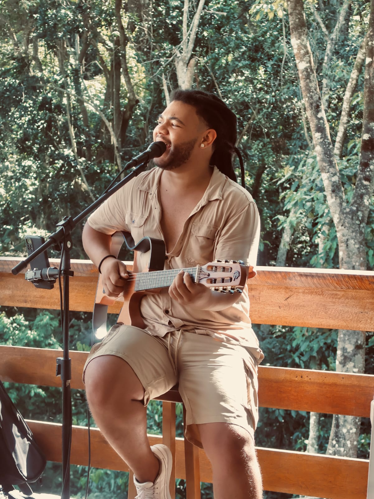

Sobre Lucas
Cantor, compositor e instrumentista, Lucas Brandão une reggae, MPB e soul em um repertório que celebra o amor, a ancestralidade e a leveza da vida. Com influências da musicalidade brasileira, seu som é um convite à dança e à reflexão.
- Localização: Jardim São José, Poá - São Paulo
- Artista independente
- Mais de 100 shows realizados no último ano